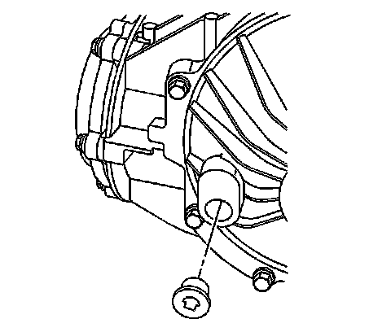

Rear Drive Axle
Rear Axle Lubricant Level Inspection
Inspection Procedure

1. Raise and support the vehicle. Refer to Lifting and Jacking the Vehicle (Service and Repair) .
2. Clean any dirt from around the differential fill plug.
3. Remove the fill plug from the differential and drain the fluid.
4. Check the differential fluid level. it should be even with the bottom of the fill plug hole to no lower than 6 mm (0.25 in) below the opening.
5. Add new fluid if necessary.
6. Fill the differential with 75W90 synthetic axle lubricant , GM P/N 12378261 (Canadian P/N 10953455) or equivalent. Refer to Approximate Fluid Capacities (Capacity Specifications) .
Notice: Refer to Fastener Notice (Fastener Notice) .
7. Install the differential fill plug to the differential.
Tighten the differential fill plug to 39 N.m (29 lb ft).
8. Lower the vehicle.